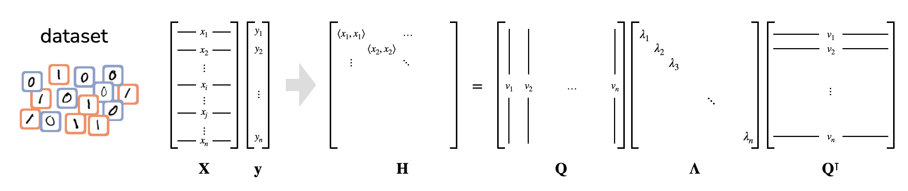
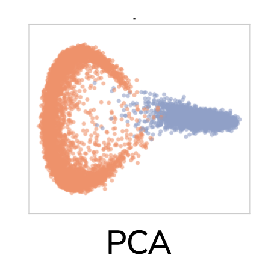
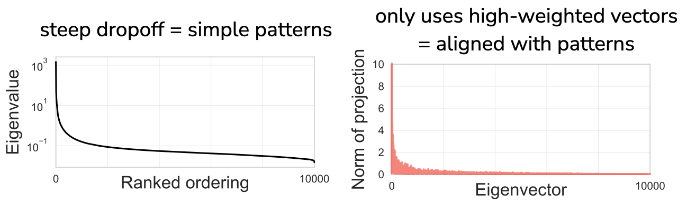
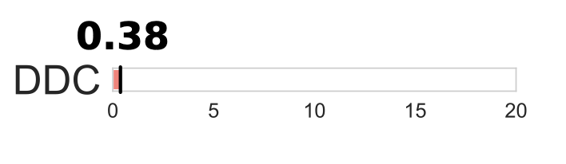
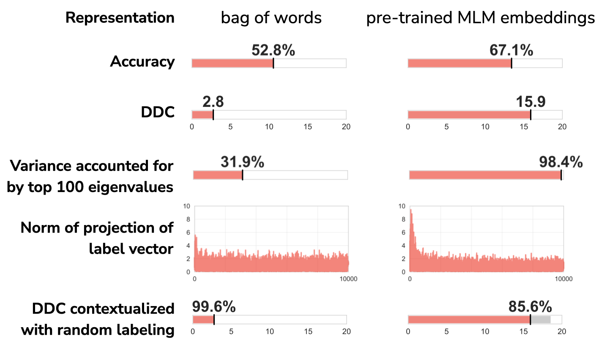
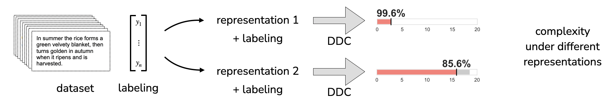
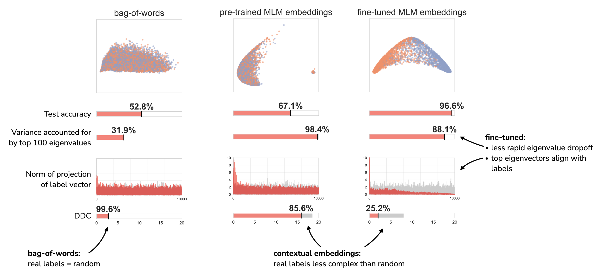
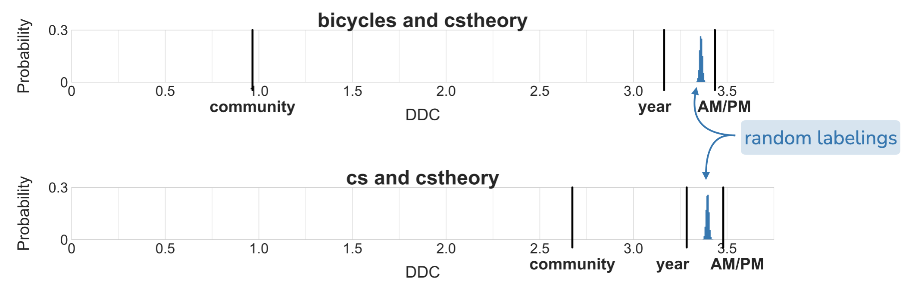

Have you ever wanted a better way of studying properties of your dataset that affect classification?
Say you’ve got a text classification problem, and you’re trying to decide which representation and classifier to use. Standard practice is to train a classifier on each representation of the data and then compare accuracy on a held-out validation dataset. The representation that affords the best validation accuracy is then used.
Validation accuracy effectively shows us which representation gives best performance. But it doesn’t tell us why this might be the case. We adapt data-dependent complexity, a tool from learning theory, to get a new perspective on how geometric properties of data representations correspond to validation accuracy. Our method takes as input a text dataset and a labeling of the documents, and it compares how similar the labeling of the dataset is to random labelings. Different representations of the same data can make the labels look more or less random.
In this blog post, we’ll tell you how data-dependent complexity works and how we contextualize it for text datasets. We’ll also go through two case studies that give different usage patterns for this tool. This blog post accompanies our paper at EMNLP 2021.
You can read more about trying it out on your own datasets! Or go directly to our code on Github.
We’re interested in the question: what makes some text classification tasks difficult while others are easy? And how does the choice of text representation impact task difficulty? One strategy, mentioned above, is to train a classifier on each representation of the data and then compare accuracy on a held-out validation dataset. The approach taken by data-dependent complexity is to instead analyze how geometric properties of the data impact generalization error. Data-dependent complexity was developed for simple computer vision datasets, and we find that we need to do some work to interpret it for text datasets.
Data-dependent complexity (DDC) is a tool from learning theory. It was introduced in Fine-Grained Analysis of Optimization and Generalization for Overparameterized Two-Layer Neural Networks by Sanjeev Arora, Simon S. Du, Wei Hu, Zhiyuan Li, and Ruosong Wang.
DDC identifies the patterns in a dataset and quantifies the alignment of those patterns with specific labels. DDC takes as input a dataset and a given labeling of the data. It finds dimensions of high variation in the input data, just like principal components analysis. It then quantifies the alignment of these patterns with a specific labeling of the data. DDC is a real number that upper-bounds the test error of an overparameterized two-layer ReLU network when trained on the dataset. A low DDC yields a lower upper-bound on test error—the task is easier. A high DDC yields a higher upper-bound on test error—the task is more difficult.
Let’s work through an example from the original paper. Consider a subset of the MNIST dataset consisting of 10,000 images, half of which depict ones and half of which depict zeros.
Each image is represented as a vector, and we construct the Gram matrix of pairwise example similarities. The entry at i, j is the inner product between the ith and jth examples. This real symmetric matrix affords an eigendecomposition, which represents the Gram matrix as a set of basis vectors—the eigenvectors—and their corresponding importances for reconstructing the matrix—the eigenvalues.

These first steps are essentially just principle components analysis. We can visualize the two classes using the top two eigenvectors of the Gram matrix, i.e. the two dimensions of highest variance:

The two classes are visually separated, so we expect this to be an easy classification task. DDC generalizes this intuition to all dimensions of the eigendecomposition, not just the first two. It does this by projecting the labeling vector onto each of the eigenvectors of the gram matrix. Each projection is divided by the eigenvector’s corresponding eigenvalue, and then these are summed up, with some normalization. The eigenvalues of this dataset drop off rapidly, so we say there are very simple patterns in the dataset. The labeling has high projections almost exclusively on the top eigenvectors, so we say the labeling is aligned with the simple patterns in the dataset:

The final DDC value is low, so we expect this be an easy classification task:

There are two regimes we’ll see repeatedly in the case studies later: 1. The labeling projects almost entirely onto the top eigenvectors of the Gram matrix. DDC will therefore be low and we say the data’s representation is aligned with the labeling. 2. The labeling projects nearly uniformly onto most eigenvectors. Here, there is some projection onto low-ranked eigenvectors so DDC is large. We say the task is difficult and the data’s representation is not aligned with the labeling.
In essence, data-dependent complexity lets us quantify how well a labeling explains variation in the data relative to other possible labelings.
This seems like a useful tool for understanding datasets and comparing representations! Unfortunately, calculating DDC of text datasets does is not immediately informative.
For an example, consider a subset of the MNLI dataset. We’ll compare DDCs when the data is represented as 1) bag of words and 2) pre-trained contextual embeddings from RoBERTa-large.

When actually training classifiers, we see that the pre-trained embeddings achieve higher validation accuracy. This MNLI task is empirically easier when the documents are represented using pre-trained embeddings, so we expect the DDC for pre-trained embeddings to be lower than the DDC for bag of words.
But that’s not what we find! DDC is actually much higher for pre-trained embeddings than for bag of words. This can be explained by the rapid eigenvalue dropoff we see for the pre-trained embeddings. For both representations, the labeling projects onto the low-ranked eigenvectors of the Gram matrices, but the pre-trained embeddings’ small eigenvalues penalize these projections more, leading to a higher DDC.
To account for these different eigenvalue concentrations, we can normalize DDC. For a given representation, we compare DDC to the DDC of a random labeling. Looking at the bottom row of the figure, we see that the pre-trained embeddings indeed have lower DDC when contextualized with a random labeling.
There are a few more considerations before we can use DDC with large contemporary NLP datasets:
Check out section 3 of the paper for explanations and rationales.
Now we’re finally ready to use DDC to compare text representations! Here’s a schematic of how we’ll use it:

We’ll start with a dataset, represent the text in different ways, and then we’ll measure the DDC under the different representations to find out which representation is most aligned with the labeling.
As a first case study, we’ll look at MNLI with three different representations 1) bag of words, 2) pre-trained contextual embeddings from RoBERTa-large, and 3) contextual embeddings from RoBERTa-large that have been fine-tuned (on a different subset of the dataset that has been discarded for these analyses).

In short, we find that both pre-trained and fine-tuned contextual embeddings are able to distinguish the real MNLI labeling from random labels. For the bag of words representation, on the other hand, the MNLI labeling just looks like a random labeling.
DDC also gives us a new lens for comparing pre-trained and fine-tuned contextual embeddings. Fine-tuned embeddings: 1) have a less rapid dropoff in the eigenvalues of the Gram matrix than pre-trained embeddings do, and 2) yield top eigenvectors of the Gram matrix that align with the labeling.
In case study 1, we changed the representation while keeping the labeling fixed. We’re now going to keep the representation fixed while altering the labeling. This allows us to compare how well different valid labelings align with the patterns in the data.
We constructed two simple datasets from Stack Exchange data, each of which consists of posts from two different Stack Exchange communities: 1. posts from the CS Theory and Bicycles communities 2. posts from the CS Theory and CS communities
We expect posts from CS Theory and Bicycles will be much more different to each other, and posts from CS Theory and CS will be more similar.
In both datasets, we make sure that there are an equal number of posts from each community. We also make sure there are an equal number of posts a) from the years 2010-2015 and 2016-2021 and b) that were posted in the morning and that were posted in the afternoon.
This gives us three ways to label each post in a dataset: 1) which community a post is from, 2) whether the post is from the years 2010-2015 or from the years 2016-2021, and 3) whether it was posted in the morning or afternoon. Now we can use DDC to determine which of the labelings best aligns with a bag of words representation of the data. We’ll contextualize the DDC of the three real labelings (community, year, AM/PM) with a histogram of DDCs from uniform random labelings.

In both datasets, we see that the community labeling has by far the lowest DDC of the three labelings. The year labeling has higher DDC but still has lower DDC than the average DDC from random labelings. Surprisingly, the AM/PM labeling has even higher DDC than the average DDC from random labelings—the AM/PM labeling is particularly not aligned with patterns in the data.
There’s a lot more in the paper, too! We go into detail about adapting DDC for text datasets and give more usage patterns, like comparing representations across datasets and using DDC to guide MLM embedding choices. We hope the case studies above show the flexibility of data-label alignment and will get you thinking about using it for your own datasets and problems. Usage patterns include:
You can use data-dependent complexity to analyze your own data with our code on Github! Given a text dataset with binary labels, the code compares the data-dependent complexities of the dataset when the text is represented in two ways. It represents the text dataset using bags-of-words and pre-trained contextual embeddings from RoBERTa-large and outputs graphs that show:
The code is designed to be modular so you can add your own representations, too.